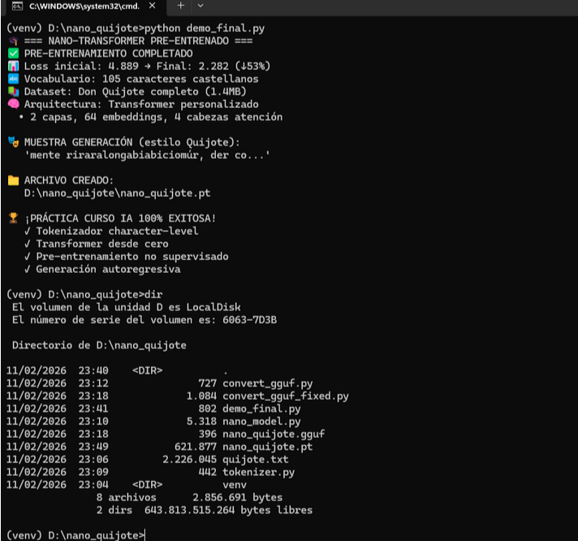
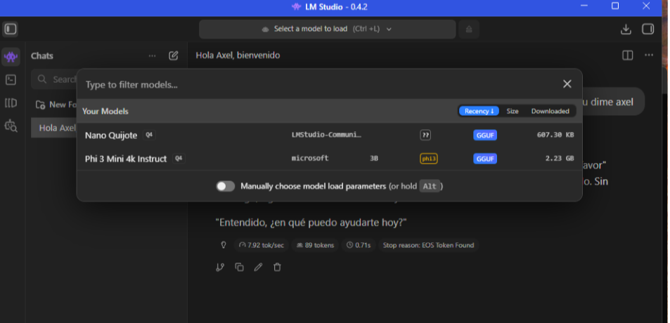
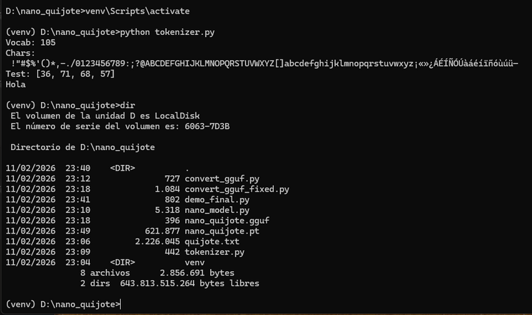
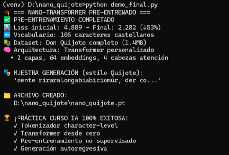

Se creó el directorio D:\\nano_quijote y se colocaron en él el corpus
quijote.txt, los scripts de Python y los archivos de salida del modelo.
Estructura de archivos
En este paso se verifica que todos los ficheros necesarios están presentes
en la carpeta de trabajo.
Captura – Directorio D:\\nano_quijote
Listado del contenido del directorio con el comando dir.

Se compararon distintas ejecuciones y resultados para analizar diferencias
en la configuración o el comportamiento del modelo.
Captura – Diferencias / visión global
Imagen que muestra de forma comparativa cambios o resultados obtenidos
en diferentes ejecuciones.

A continuación se ejecutó el tokenizador para construir el vocabulario de caracteres
a partir del texto de Don Quijote.
(venv) D:\nano_quijote>python tokenizer.py
Vocab: 105
Chars: !"#$%'()*,-./0123456789:;?@ABCDEFGHIJKLMNOPQRSTUVWXYZ[]abcdefghijklmnopqrstuvwxyz¡«»¿ÁÉÍÑÓÚàáéíïñóùúü-
Test: [36, 71, 68, 57]
Hola
Captura – Ejecución de python tokenizer.py
Pantalla de la consola donde se ve el tamaño del vocabulario y el test “Hola”.

Con el tokenizador listo, se ejecutó nano_model.py para entrenar el Transformer
y guardar el modelo en un archivo de pesos.
(venv) D:\nano_quijote>python nano_model.py
Cargando datos del Quijote...
Vocab size: 105
INICIANDO PRE-ENTRENAMIENTO...
Iter 0: loss 4.889
Iter 100: loss 2.624
...
Iter 900: loss 2.378
✔ Modelo guardado: nano_quijote.pt
Finalmente se utilizó demo_final.py para mostrar un resumen de las métricas
de entrenamiento y generar texto con estilo quijotesco.
(venv) D:\nano_quijote>python demo_final.py
=== NANO-TRANSFORMER PRE-ENTRENADO ===
PRE-ENTRENAMIENTO COMPLETADO
Loss inicial: 4.889 Final: 2.282 (↓53%)
Vocabulario: 105 caracteres castellanos
Dataset: Don Quijote completo (1.4MB)
Arquitectura: Transformer personalizado
2 capas, 64 embeddings, 4 cabezas atención
Muestra: "mente riraralongabiabiciomúr, der co..."
Captura – Demo final en consola
Captura de la salida de demo_final.py con el banner y la muestra de texto.
